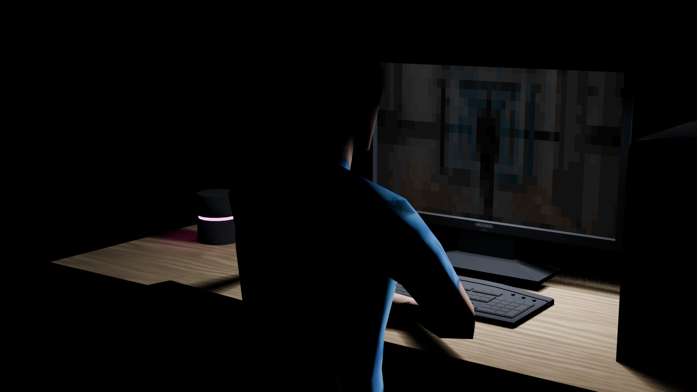

Blender 3D Animation
Задача
Создание 3D-анимации на основе готовых моделей в Blender: настройка сцены, освещения, анимирование и рендер финального ролика.
Инструменты
Blender (моделирование,анимирование, рендер), готовые 3D-модели, композитинг
01 / Результат анимации
02 / Процесс разработки

3D-модель
Готовая модель, использованная как основа сцены.

Сцена
Настройка костей, освещения и камеры перед анимацией.

Финальный рендер
Кадр из финального рендера анимации.
03 / Спецификации проекта
Технология реализации: Blender (анимация, рендер)
Стилистика: 3D-анимация с использованием готовых моделей